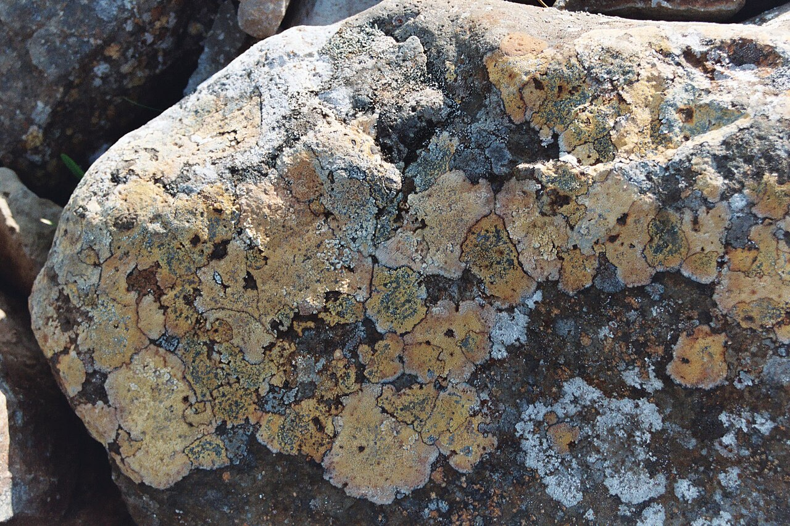

群落的演替
本期导读
初生演替 · 次生演替 · 人类活动

视频原话 · 导读3 句
- 同学们好！这节课梳理人教版选择性必修二第二章第三节——群落的演替。7.5s
- 高考常考初生演替和次生演替的判断、演替的过程和趋势，以及人类活动对演替的影响。8.7s
- 我们按七个考点梳理，每个考点都讲清楚怎么考、怎么做。5.6s
演替的概念01#
群落演替：随着时间的推移，一个群落被另一个群落代替的过程
- 群落甲（优势种 A）
- 时间推移 →群落乙（优势种 B）
原因：环境不断变化；生物的繁殖、迁移等活动；种内和种间关系变化；人类活动干扰
易错
演替是优势取代，不是“取而代之”：原来的物种不一定消失，只是不再占优势
视频原话3 句
- 考点一，演替的概念。随着时间的推移，一个群落被另一个群落代替的过程，叫做群落演替。9.1s
- 演替的原因：环境不断变化，生物本身不断进行繁殖、迁移等活动，种内和种间关系不断变化，还有人类活动的干扰。11.1s
- 易错：演替是优势取代，不是“取而代之”。新的优势种出现后，原来的物种不一定消失，往往只是不再占优势。10.5s
初生演替02#
起点：从来没有植被，或植被被彻底消灭（沙丘、火山岩、冰川泥）
解题方法
某阶段为何能取代前一阶段？答：植株更高大，在争夺阳光的竞争中占优势
视频原话5 句
- 考点二，初生演替。在一个从来没有被植物覆盖的地面，或者原来存在过植被、但被彻底消灭了的地方发生的演替。比如沙丘、火山岩、冰川泥上的演替。15.2s
- 裸岩上的演替要经过：地衣阶段、苔藓阶段、草本植物阶段、灌木阶段和乔木阶段。8.2s
- 地衣分泌有机酸，加速岩石风化，逐渐形成土壤，为苔藓的生长创造了条件。7.7s
- 苔藓能取代地衣，是因为苔藓生长更高大，在争夺阳光中占优势。后面的阶段也是同样的道理。9.6s
- 考法：问某一阶段为什么能取代前一阶段。解题方法：答植株更高大，在争夺阳光的竞争中占优势。10.2s
次生演替03#
起点：原有植被不存在，但土壤条件基本保留，甚至保留了种子或其他繁殖体
火灾过后的草原
过量砍伐的森林
弃耕的农田
- 弃耕农田
- →一年生杂草
- →多年生杂草
- →灌木
- →乔木（条件适宜）
解题方法
看起点有没有土壤条件和繁殖体：有 → 次生演替；没有 → 初生演替
视频原话4 句
- 考点三，次生演替。原有植被虽已不存在，但原有土壤条件基本保留，甚至还保留了植物的种子或其他繁殖体的地方发生的演替。12.4s
- 比如火灾过后的草原、过量砍伐的森林、弃耕的农田上的演替。6.0s
- 弃耕农田上，一般先长出一年生杂草，再到多年生杂草，然后是灌木，在适宜的条件下最终可能演替成森林。10.5s
- 解题方法：判断初生还是次生，就看起点有没有土壤条件和繁殖体。有，是次生演替；没有，是初生演替。11.2s
两种演替的比较04#
| 比较项目 | 初生演替 | 次生演替 |
|---|---|---|
| 起点 | 没有土壤（裸岩、沙丘、冰川泥） | 有土壤，甚至有繁殖体 |
| 时间、速度 | 时间长，速度慢 | 时间短，速度快 |
| 影响因素 | 自然因素为主 | 人类活动影响较大 |
易错
火灾后的森林、弃耕农田看起来光秃秃，但土壤还在 → 次生演替
视频原话5 句
- 考点四，两种演替的比较。3.1s
- 起点：初生演替从没有土壤的地方开始；次生演替从有土壤、甚至有繁殖体的地方开始。8.7s
- 时间和速度：初生演替经历的时间长、速度慢；次生演替经历的时间短、速度快。8.1s
- 影响因素：初生演替主要是自然因素；次生演替受人类活动的影响较大。7.5s
- 易错：火灾后的森林、弃耕农田，地面看起来光秃秃，但土壤还在，属于次生演替。8.4s
演替的趋势05#
方向：物种增多、结构复杂
结果：达到与环境相适应的相对稳定状态
终点取决于气候等条件：干旱地区可能只到草本或灌木阶段
易错
稳定后物种组成仍在变化；演替终点不一定是森林
视频原话4 句
- 考点五，演替的趋势。在自然条件下，演替一般朝着物种增多、结构复杂的方向发展。8.7s
- 群落中的物种丰富度、有机物总量逐渐增加，群落的结构越来越复杂，稳定性逐渐提高，最终达到与环境相适应的相对稳定状态。12.0s
- 但演替能否到达森林阶段，取决于气候等条件。在干旱的荒漠或草原地区，可能只发展到草本或灌木阶段。10.6s
- 易错：演替到相对稳定状态后，群落的物种组成仍在变化，并不是一成不变；演替的终点也不一定是森林。10.1s
人类活动的影响06#
人类活动使演替按照不同于自然演替的速度和方向进行
不合理
乱砍滥伐、过度放牧、围湖造田
→ 群落退化，甚至荒漠化
合理
封山育林、治理沙漠、建立人工林
→ 加快演替，朝有利方向发展
考法
答清楚改变了演替的速度还是方向，以及是有利还是不利
视频原话4 句
- 考点六，人类活动对群落演替的影响。人类活动往往会使群落演替按照不同于自然演替的速度和方向进行。10.8s
- 不合理的活动，比如乱砍滥伐、过度放牧、围湖造田，会使群落退化，甚至出现荒漠化。8.5s
- 合理的活动，比如封山育林、治理沙漠、建立人工林，可以加快演替，使群落朝有利的方向发展。9.3s
- 考法：判断某项措施对演替的影响，答清楚它改变了演替的速度还是方向，以及是有利还是不利。9.4s
退耕还林还草还湖07#
在不适宜耕种的坡地、沙化土地等实施：退耕还林、还草、还湖
- 土壤条件还在
- →次生演替，速度较快
- 物种丰富度增加
- →结构变复杂
- →稳定性提高
- →控制水土流失、沙化
考法
退耕还林属于次生演替；体现了人类活动可以改变演替的速度和方向
视频原话4 句
- 考点七，退耕还林、还草、还湖。为了恢复生态环境，我国在不适宜耕种的坡地、沙化土地等地方实施了退耕还林、还草、还湖。13.5s
- 这些措施利用了次生演替：土壤条件还在，演替速度较快，植被可以较快恢复。7.7s
- 植被恢复后，物种丰富度增加，群落结构变复杂，生态系统的稳定性提高，水土流失和沙化得到控制。10.0s
- 考法：题目问退耕还林属于哪种演替、有什么意义。答：属于次生演替；体现了人类活动可以改变演替的速度和方向。11.8s
易错速查✓
先自己判断，再点按钮查看对错与解析。
- 1冰川泥、火山岩上的演替是初生演替说法正确。
- 2弃耕农田上的演替属于初生演替说法错误：土壤条件保留，属于次生演替
- 3演替过程中原有物种都会消失说法错误：是优势取代，原有物种可能仍存在
- 4次生演替的速度一般比初生演替快说法正确。
- 5群落演替最终都能到达森林阶段说法错误：取决于气候等环境条件
- 6人类活动能改变演替的速度和方向说法正确。
有没有土壤定类型，能不能成林看气候！
视频原话 · 易错速查5 句
- 最后，用六道判断题检验一下。3.6s
- 判断一：冰川泥、火山岩上的演替是初生演替？对。判断二：弃耕农田上的演替属于初生演替？错，属于次生演替。13.0s
- 判断三：演替过程中原有物种都会消失？错，是优势取代。判断四：次生演替的速度一般比初生演替快？对。12.2s
- 判断五：群落演替最终都能到达森林阶段？错，取决于气候。判断六：人类活动能改变演替的速度和方向？对。12.4s
- 七个考点串成一条线：有没有土壤定类型，能不能成林看气候。我们下期再见！7.8s
图片来源
图片来源：Wikimedia Commons —— Nojhan《Lichen orange pierre》CC BY-SA 3.0
Photo: Nojhan, CC BY-SA 3.0